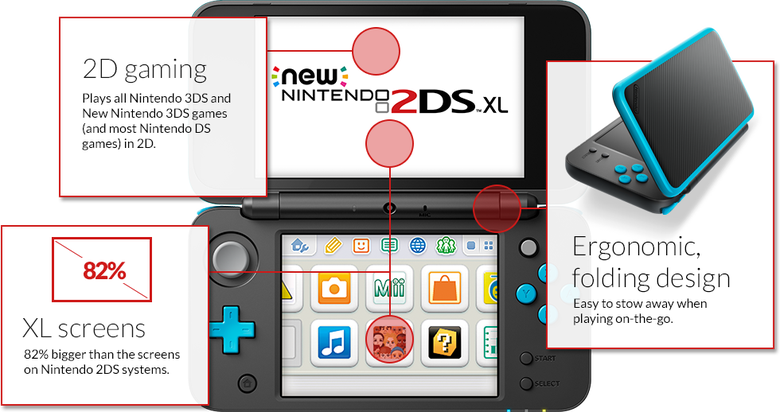

New Nintendo 2DS XL Hardware Review Posted on July 1, 2017

By: Colette
As the sixth system in the Nintendo 3DS and 2DS family of consoles, the New Nintendo 2DS XL is a solid offering for tech enthusiasts, collectors and children alike. With a design that’s pleasing to the eye and an exterior upper screen that’s satisfying to touch, the 2DS XL is only a budget device by the materials it uses rather than the hardware it contains.
It’s hard to believe that only six years ago the original Nintendo 3DS was released. In an age where the line drawn between handheld consoles and smartphones is smudged, there’s still a huge market for games on the go. When we talk to non-gaming peers or non-technical individuals, the confusion between a DS and a 2DS XL sets in. On appearance alone, the closed lid of a 2DS XL could be mistaken by non-technical individuals as a bigger and better version of the DS Lite; and they wouldn’t be wrong. It’s got a hinge, has dual screens and there’s no visible stereoscopic 3D. While it could be an upgraded 10-year anniversary edition of the DS Lite, in terms of hardware the New 2DS XL is on par with its bigger brother, performing with almost identical specs to the New 3DS XL.
Weighing in at 260 grams (9.2 ounces), the New 2DS XL is approximately 68 grams lighter than the New 3DS XL and over 70 grams lighter than the original 3DS XL. Both the upper and lower screens are identical in diagonal size to the New 3DS XL, measuring 4.88 inches and 4.18 inches respectively. While the widescreen LCD display is at a rich 16.77 million colours and a 400 x 240 pixel resolution, in comparison to the New 3DS XL which reaches 800 x 240 in resolution.
In terms of playability, Nintendo cites the New 2DS XL’s battery life as on par with the 3DS family of systems at around three to five hours. Playing Pokemon Moon with internet connectivity enabled, 50 percent volume and on full brightness, the battery clocks in around four hours of play time; on par with the rest of the family, if not better. With no visible hardware glitches when playing Pokemon Moon or the Welcome Amiibo update to Animal Crossing: New Leaf, the New 2DS XL is on equal footing when it comes to the hardware used.
What the New 2DS XL comes down to, then, is its design and user experience. Included in the box, you’ll find six AR cards, an AC adapter, a 4GB SDHC Memory Card and a stylus tucked inside the console itself. Fortunately (and surprisingly), the New 2DS XL includes the AC adapter as standard for North America, Europe, Australia and the UK this time around. In terms of design, though, the New 2DS XL differs quite significantly from the New 3DS XL, with changes that make sense with the compact design of the console, yet do not marry too wonderfully with the overall user experience.
The New 2DS XL’s white and orange colour scheme is pleasing to the eye, with a thick orange outline around the upper screen’s exterior. There’s also a slightly ridged effect on the console’s face up exterior, which is beautiful and very satisfying to touch. At first glance, you’ll notice the console’s hinge isn’t built in to the main console unit, but is actually attached at the seams, so to speak. The cylindrical shape has three distinct sections, with the upper screen held by the two 1.5cm moveable joints at either side of the immovable middle bar, which also features the front facing camera and SpotPass notification lights. Closing and folding the device feels much different and you can hear audible squeaks and grinds from the joints moving in sync, particularly when fully opening the console so that it’s flat. Whereas the 3DS XL feels steady with its middle movable hinge joint, the New 2DS XL feels vulnerable and loose.
The console’s bottom screen interior, however, is very similar to the layout on the New 3DS XL. A softer orange highlights the console’s shoulder buttons, the A, B, X, Y and D-pad, and the power button, while the circular pad and C stick are in grey. The home button appears just beneath the D-pad, instead of in the middle, and the volume slider appears on the left side of the lower screen, slightly quieter at 100 percent volume than the New 3DS XL. The upper screen’s interior certainly differs with an inset into the fold of the console, giving it a full gloss layer with the system’s stereo speakers internal. Unfortunately, the one major flaw with this design opens the way to an element that all gamers hate; the New 2DS XL is a dust and smudge magnet. I’ve yet to meet a person that carries cleaning cloths everywhere they go. Heck, I wear glasses every day and I’ve never carried the one bundled in the case, always opting for my shirt as the best cleaning cloth to hand.
The console’s compact design means there’s less room for those with larger hands. Between the game card slot and the size of the stylus, the New 2DS XL is intended for children, or those with smaller hands. Tucked away with the headphone jack at the bottom of the console is the stylus, which measures approximately 2-3cm smaller than the one included with the New 3DS XL and its original. Yet it feels much nicer to hold with coated plastic rather than glossy. The game card slot is covered and houses the Micro SD card as well as the game card. Perhaps the biggest frustration here is that the slots are so finicky and often require a bit of fumbling to get the cards inserted. The SD card slot is, however, easily accessible which certainly beats the New 3DS XL’s purchase of a small screwdriver and removal of the back panel, meaning less hassle overall.
Having played with the New 2DS XL for a lengthy amount of time, it’s certainly not as comfortable to hold due to its rigid back panel casing that overlaps onto the inside of the console causing a slight gap. Resting your thumb in a natural hold position on the console means grazing the casing sometimes, which can be slightly sharp on your skin. The preference for a smoother panelling seen on the New 3DS XL is much more optimal. And while the New 2DS XL is aesthetically inferior to its big brother, the hardware is certainly up to speed, making for a great budget console if you prefer playing in 2D.
8/10
New Nintendo 2DS XL unit provided by Nintendo for review purposes. Generally available on July 28th in North America and Europe.
'Super Mario Odyssey' Is About To Turn the Mario Series Upside-Down
Lurking beneath the kaleidoscopic bustle of Super Mario Odyssey, Nintendo's tentpole 3D Mario for its Switch game system, due October 27, is something counterintuitively pacific. The game in motion is vibrant and frenetic, angular and elastic, a potpourri of gameplay ideas whizzing and bopping like something unleashed from a crazed chemistry experiment.
New Nintendo 2DS XL Hardware Review
As the sixth system in the Nintendo 3DS and 2DS family of consoles, the New Nintendo 2DS XL is a solid offering for tech enthusiasts, collectors and children alike. With a design that’s pleasing to the eye and an exterior upper screen that’s satisfying to touch, the 2DS XL is only a budget device by the materials it uses rather than the hardware it contains.
Why 'Pokemon Go' Matters One Year Later
A year ago today, July 6, Niantic unleashed Pokémon Go, an unexpectedly fitness-aspirational scavenger hunt whose dazzling uptake no one saw coming. In hindsight, we should have guessed better. Pokémon is the third-bestselling games franchise in the world after Tetris and Mario, and that's restricting our count to the handheld turn-based roleplaying games at the franchise core.
The Legend of Zelda: Breath of the Wild Master Trials DLC Review
The breadth of content in The Legend of Zelda: Breath of the Wild is astounding. But with the arrival of the Master Trials DLC, a 100+ hour game can easily turn into much more. Between the challenging Trial of the Sword to the variety of masks on offer, the DLC is quite the treasure trove for the die-hard Zelda fan.